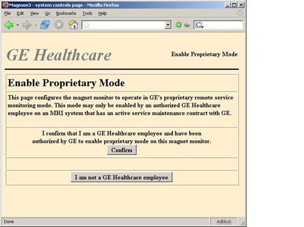
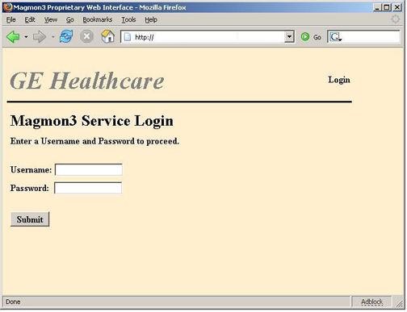
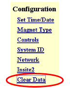
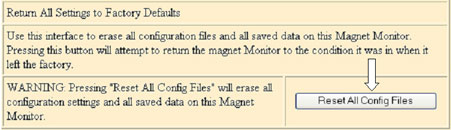
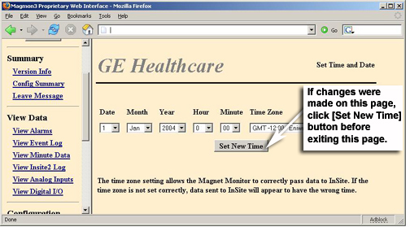
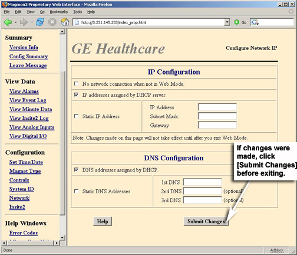

GE Exclusive Use Only
Direction 5440000, Rev# 5
Signa HDxt Service Methods
Module Version 3.0, Version Date 11/5/09
GE Exclusive Use Only |
Magmon3 units are configured in non-Proprietary mode when they are shipped to a site (this includes both new installations and FRUs). While in non-Proprietary mode, most of the internal web pages are disabled. The Magmon3 must be re-configured to Proprietary mode before the full set of internal web pages and InSite can be accessed.
Use the front panel to put the Magmon3 into Web mode.
Connect the laptop to the Magmon3 unit by using either a direct network connection or a serial cable connection. Enter the Magmon3 IP address in a browser to view the Magmon3 web interface.
Once connected and viewing the login screen, enter this information (input is case-sensitive):
Username: MMToProp
Password: BackOnServ
The Enable Proprietary Mode screen appears (Illustration 1). Click the appropriate button.
Illustration 1: Enable Proprietary Mode Screen

Go back to the Magmon3 Home URL (that is, the Magmon3's IP address), so that the login page reappears.
Login with this information (input is case-sensitive):
Username: MMService
Password: MagnetMonitor
The Magmon3 is now in Proprietary mode.
The customer can always access the non-Proprietary web screens by logging in with this information (input is case-sensitive):
Username: MMConfig
Password: ConfigMonitor
Once the laptop and Magmon3 are successfully connected, the first web page the Magmon3 displays is the login page (Illustration 2).
Illustration 2: Magmon3 Service Login

Login with this information (input is case-sensitive):
Username: MMService
Password: MagnetMonitor
| NOTE: | The Magmon3 will disconnect users after 45 minutes. |
Magnet Monitor type must be selected. Refer to Configuration Setup for more information.
In the event the customer has declined to renew the service contract, the Magmon3 will need to be placed back into non-Proprietary mode.
| NOTE: | This section can be run remotely. Contact the local OLC magnet support group for instructions. |
The action of setting the unit back to non-Proprietary operation will result in the deletion of all data and configuration files stored in the Magmon3's flash memory. In the event the customer would come back on contract in the future, it would be advantageous to record all the configuration information and file it away for future use.
Use the front panel to put the Magmon3 into Web mode.
Connect the laptop to the Magmon3 unit by using either a direct network connection or a serial cable connection. Enter the Magmon3 IP address in a browser to view the Magmon3 web interface.
Once connected and viewing the login screen, enter this information (input is case-sensitive):
Username: MMService
Password: MagnetMonitor
Record information obtained from the Config Summary page into Table 1.
Record information obtained from the Network and InSite2 Configuration pages into Table 2.
Table 1: Config Summary Information
| Configuration Information | |
| Time Zone | |
| Magnet Type | |
| Compressor Type | |
| Control Settings | |
| Display in Metric (1 or 0) | |
| HeaterOffPSI (x.x psi) | |
| HeaterOnPSI (x.x psi) | |
| Normal InSite Interval (Hours/Minutes) | |
| Abnormal InSite Interval (Hours/Minutes) | |
| For HFO Systems only, coldhead controls | |
| HeLevel Top low limit (10 - 100%) | |
| HeLevel bottom limit (10 - 100%) | |
| HePressure high limit (0.3 - 7.0 psi) | |
| System ID | |
| SystemID (CryoID) | |
| Magnet Serial Number | |
| Hospital Name / Location | |
| Hospital Room Name | |
| MAC Team Leader | |
Table 2: Network and InSite2 Configuration Information
| Network - IP Configuration | ||
| No Network Connection when not in Web Mode (circle one) | Y | N |
| IP Addresses assigned by DHCP Server (circle one) | Y | N |
| Static IP Address (circle one) | Y | N |
| IP Address | ||
| Subnet Mask | ||
| Gateway | ||
| Network - DNS Configuration | ||
| DNS Addresses assigned by DHCP Server (circle one) | Y | N |
| Static DNS Addresses (circle one) | Y | N |
| 1st DNS | ||
| (Optional) 2nd DNS | ||
| (Optional) 3rd DNS | ||
| InSite Connection Type | ||
| Broadband (circle one) | Y | N |
| Broadband Polling Time (in minutes) | ||
| Dialup Modem (circle one) | Y | N |
| Mobile Satellite Modem (circle one) | Y | N |
| No InSite Connection (circle one) | Y | N |
| Remote Service Configuration | ||
| Enterprise URL | ||
| Protocol | ||
| HTTP Proxy Server Configuration | ||
| Proxy (Name/IP) | ||
| Port | ||
| Account (circle one) | Y | N |
| Username | ||
| Password | ||
| Modem Parameters | ||
| Phone Number | ||
| Username | ||
| Password | ||
| Country Region | ||
| Country Region Code | ||
| Modem Default Init String | ||
| Dial String | ||
| InSite2 Retry Number | ||
After the configuration settings have been recorded, perform these steps to reset configurations back to factory defaults.
Under the Configuration heading on the left side of the screen, select [Clear Data]. See Illustration 3.
Illustration 3: Configuration Menu

Scroll down to the bottom of the page, and click [Reset All Config Files]. See Illustration 4.
Illustration 4: Reset All Config Files

Click [Log Out] at the top of the screen (Illustration 5) for changes to take effect.
Illustration 5: Log Out Button
Re-establish the laptop connection back to Magmon3 by placing the Magmon3 in Web mode.
Log in using the (case-sensitive) non-proprietary Username and Password:
Username: MMConfig
Password: ConfigMonitor
Click [Set Time/Date] and set the date, time and time zone, as in Illustration 6. Click [Set New Time] when complete.
Illustration 6: Set Time and Date Page

Click [Magnet Type] and select the appropriate magnet type from the menu, as in Illustration 7.
| NOTE: | Use Leybold compressor type for sites that have Balzers compressors. |
Illustration 7: Magnet Type Config Page

If this is an HFO system, click [Network] and set up the network configuration (see Illustration 8) using the information recorded in Table 2. Click [Submit Changes] when complete.
Illustration 8: IP Configuration for HFO Systems

Once all the configurations have been submitted, click [Log Out].
Finalization: Contact your regional Online Center and notify them that this system is off contract and the Magmon3 has been reverted back to non-Proprietary mode and reconfigured for basic operation.